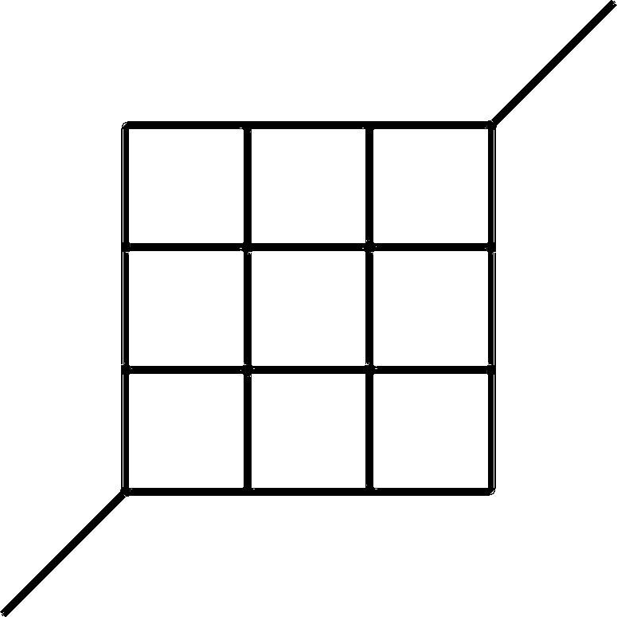

activitygen generates demand from a description of the population in the net. To do so, it uses a simple activity-based traffic model. It supports the activities work, school, and free time and the conveyances walking, bike, car, and bus. Cars may have their start or stop location outside the map.
Typical Command Line#
activitygen --net-file <NET> --stat-file <STATISTICS> --output-file <TRIPS> --random
<NET> is a map in form of a SUMO net file, <STATISTICS> contains the description of the population (described below), and <TRIPS> is the generated SUMO routes file (the demand).
You can give activitygen a first try with the following example.
Example#

While activitygen has been developed mainly to generate traffic demand for larger networks, this example features the small network shown in the image on the right. Download the files <SUMO_HOME>/tests/activitygen/demand_generation/activitygen-example.net.xml and <SUMO_HOME>/tests/activitygen/demand_generation/activitygen-example.stat.xml to follow this example.
To run this example, use the following commands:
activitygen --net-file activitygen-example.net.xml \ --stat-file activitygen-example.stat.xml \ --output-file activitygen-example.trips.rou.xml \ --random duarouter --net-file activitygen-example.net.xml \ --route-files activitygen-example.trips.rou.xml \ --output-file activitygen-example.rou.xml \ --ignore-errors sumo --net-file activitygen-example.net.xml \ --route-files activitygen-example.rou.xml
The first command generates the net file from the node and edge description. The second command generates the routes file (the demand) from a description of the population in the stat file. The generated routes files does not contain the complete route information though, instead it contains start edge and end edge (and optionally some vias, so-called trips) only. This allows you to choose the router you want for linking departure and destination edges.
When you run duarouter as shown above, all vehicles will pick the fastest route under the assumption of being alone in the network. This may lead to unrealistic jamming and should be remedied with a traffic assignment method.
Finally, you can run a traffic simulation with the SUMO main executable. You may also give the trip file directly to SUMO as well but this will slow down the simulation considerably because all the routing is now done ad hoc based on the current network status. The benefit from this approach is better route choice since vehicles take the network state at the time of their departure into account during routing (see Demand/Automatic_Routing)
sumo --net-file activitygen-example.net.xml \ --route-files activitygen-example.trips.rou.xml
The Statistics File#
General information#
First of all we need general information over the city.
<city> <general inhabitants="1000" households="500" childrenAgeLimit="18" retirementAgeLimit="65" carRate="0.58" unemploymentRate="0.05" footDistanceLimit="350" incomingTraffic="200" outgoingTraffic="50" /> </city>
The meanings of all these attributes are described in the following table:
| Attribute Name | Value Type | Description |
|---|---|---|
| inhabitants | Integer | Total number of inhabitants |
| households | Integer | Total number of households (must be between 0.5 and 1 times the number of adults of the city) |
| childrenAgeLimit | Integer | Age under which people are children. This is the first year of adulthood |
| retirementAgeLimit | Integer | Age under which people can have children home and work |
| carRate | Float[0;1] | Probability for an adult to own a car |
| unemploymentRate | Float[0;1] | Probability for an adult in age of work to be unemployed |
| footDistanceLimit | Float | Maximum distance one would go by foot instead of another transportation mean. |
| incomingTraffic | Integer | Number of people coming everyday into the city for they work |
| outgoingTraffic | Integer[0,inhabitants] | Number of inhabitants working outside the city |
Parameters#
These entries are different from the general information element in what they describe. They depend much more of the special context or state of the city (events, behavior of the population...). They can also be useful for optimization: the mean speed can be observed afterwards; all values can be changed in order to meet validation criteria on the traffic.
<city> <general ... /> <parameters carPreference="0.50" meanTimePerKmInCity="360" freeTimeActivityRate="0.15" uniformRandomTraffic="0.20" departureVariation="120" /> </city>
The meanings of all these attributes are described in the following table:
| Attribute Name | Value Type | Description |
|---|---|---|
| carPreference | Float[0;1] | Probability that an adult prefers to take his car instead of a public transportation mean (when both available); default: 0. |
| meanTimePerKmInCity | Integer(sec) | Estimation of the time needed to drive one kilometer (bird's eye) on the map; default: 360s. |
| freeTimeActivityRate | Float[0;1] | Probability that a given household, a given day, has a free time activity using a car; default: 0.15. |
| uniformRandomTraffic | Float[0;0.999] | Proportion of the random traffic demand in the whole traffic demand; default: 0. |
| departureVariation | Float(sec) | Variance of the normal distribution introduced for slight variations in departure time (human natural variation in relation to schedules); default: 0. |
Population's Age Brackets#
In order to distribute the population among households and in the city coherently, we need a precise age distribution of this population.
<city> <general ... /> <parameters ... /> <population> <bracket beginAge="0" endAge"4" peopleNbr="1745" /> ... <bracket beginAge="66" endAge"90" peopleNbr="978" /> </population> </city>
Follows the description of all bracket attributes.
| Attribute Name | Value Type | Description |
|---|---|---|
| beginAge | Integer | Beginning age of the interval (incl.). If this is not the first bracket, this age is greater or equal to the previous bracket's ending age |
| endAge | Integer | End age of the interval (excl.). This age is greater to the current bracket's Beginning age |
| peopleNbr | Integer | Number of people in the interval age of the bracket ([beginAge,endAge)). This is an relative value, it will be normalized with the number of inhabitants of the city |
Work Hours#
We need to specify the opening and closing hours of all city's work positions.
<city> <general ... /> <parameters ... /> <population> <bracket ... /> ... </population> <workHours> <opening hour="30600" proportion="0.30" /> ... <closing hour="43200" proportion="0.20" /> ... </workHours> </city>
Here are descriptions of all attributes of opening and closing elements:
| Attribute Name | Value Type | Description |
|---|---|---|
| hour | Integer(sec) | Possible beginning or ending time of work. |
| proportion | Float | Proportion of work positions having this time as a beginning (resp. end) hour. It's a relative value: the probability of occurrence is computed by normalizing all opening (resp. closing) proportion values by one. |
Population and Work Position Distribution#
Now, we have to specify the density of people and work in each street of the city. (by street I meant edges which are even more precise)
<city> <general ... /> <parameters ... /> <population> <bracket ... /> ... </population> <workHours> <opening ... /> ... <closing ... /> ... </workHours> <streets> <street edge="abc123" population="2.5" workPosition="10.0" /> ... </streets> </city>
Here are the corresponding attribute descriptions:
| Attribute Name | Value Type | Description |
|---|---|---|
| edge | String | Edge's id |
| population | Float | Number of people per meter street. Relative value (normalized with the total number of inhabitants) |
| workPosition | Float | Number of work positions per meter street. Relative value (normalized with the total number of city's work demand) |
City Gates#
In order to generate incoming and outgoing traffic, we need to specify gates to the city. Every gate will generate the same number of incoming (resp. outgoing) cars (the total number divided by the number of gates).
<city> <general ... /> <parameters ... /> <population> <bracket ... /> ... </population> <workHours> <opening ... /> ... <closing ... /> ... </workHours> <streets> <street ... /> ... </streets> <cityGates> <entrance edge="abc123" pos="243.67" incoming="1.5" outgoing="2.2"/> <entrance edge="abc234" pos="0.00" incoming="1.0" outgoing="0.5"/> ... </cityGates> </city>
The corresponding attribute descriptions:
| Attribute Name | Value Type | Description |
|---|---|---|
| edge | String | Edge's id |
| pos | Float (m) | Exact position in the street (edge), in meters, from the beginning of the given edge (the maximum value is the length of the edge) |
| incoming | Float | Proportion of the incoming vehicles, coming through this gate (relatively to the incoming values of the other gates) |
| outgoing | Float | Proportion of the outgoing vehicles, leaving the city through this gate (relatively to the outgoing values of the other gates) |
Schools#
Children don't go to work but to school. The particularity of schools is that they are exactly positioned and receive many pupils every day.
<city> <general ... /> <parameters ... /> <population> <bracket ... /> ... </population> <workHours> <opening ... /> ... <closing ... /> ... </workHours> <streets> <street ... /> ... </streets> <cityGates> <entrance ... /> ... </cityGates> <schools> <school edge="123abc" pos="23.0" beginAge="12" endAge="18" capacity="400" opening="32400" closing="64800" /> ... </schools> </city>
The corresponding attribute descriptions:
| Attribute Name | Value Type | Description |
|---|---|---|
| edge | String | Edge's id |
| pos | Float (m) | Exact position in the street (edge), in meters, from the beginning of the given edge (the maximum value is the length of the edge) |
| beginAge | Integer | Age of the youngest pupils of the school (lower bound, included in the bracket of acceptance) |
| endAge | Integer | Age of children not accepted in the school any more (higher bound, excluded from the bracket of acceptance) |
| capacity | Integer | Maximum number of pupils accepted |
| opening | Integer (sec) | Time of class beginning (school time) |
| closing | Integer (sec) | Time of class ending (home time) |
Bus Lines#
People have a public bus line system to their disposition. This public transportation system is described by stations, different bus lines having their corresponding station for both directions and schedules.
<city> <general ... /> <parameters ... /> <population> <bracket ... /> ... </population> <workHours> <opening ... /> ... <closing ... /> ... </workHours> <streets> <street ... /> ... </streets> <cityGates> <entrance ... /> ... </cityGates> <schools> <school ... /> ... </schools> <busStations> <busStation id="1" edge="abc123" pos="456" /> <busStation id="2" edge="123cba" pos="324" /> ... </busStations> <busLines> <busLine id="601" maxTripDuration="3000"> <stations> <station refId="1" /> ... </stations> <revStations> <station refId="2" /> ... </revStations> <frequencies> <frequency begin="10000" end="25000" rate="1500" /> ... </frequencies> </busLine> </busLines> </city>
The corresponding attribute descriptions of all elements:
| Attribute Name | Value Type | Description |
|---|---|---|
| id | String | Bus line's id |
| maxTripDuration | Integer (sec) | Maximum time needed for a bus to do the end-to-end trip. |
| refId | Integer | Reference to the id of the chosen station (refers to a busStation object's id) |
| begin | Integer (sec) | Time of the beginning of a new frequency |
| end | Integer (sec) | End time of the frequency |
| rate | Integer (sec) | Time between two buses, this is the inverse of the mathematical frequency. This bus rate is performed between the beginning and end values described above |
Final Aspect#
Here is a complete example of a stat file:
<city> <general inhabitants="1000" households="500" childrenAgeLimit="19" retirementAgeLimit="66" carRate="0.58" unemploymentRate="0.05" footDistanceLimit="250" incomingTraffic="200" outgoingTraffic="50" /> <parameters carPreference="0.50" meanTimePerKmInCity="6" freeTimeActivityRate="0.15" uniformRandomTraffic="0.20" departureVariation="300" /> <population> <bracket beginAge="0" endAge="30" peopleNbr="30" /> <bracket beginAge="30" endAge="60" peopleNbr="40" /> <bracket beginAge="60" endAge="90" peopleNbr="30" /> </population> <workHours> <opening hour="30600" proportion="0.30" /> <opening hour="32400" proportion="0.70" /> <closing hour="43200" proportion="0.20" /> <closing hour="63000" proportion="0.20" /> <closing hour="64800" proportion="0.60" /> </workHours> <streets> <street edge="e01t11" population="10" workPosition="100" /> <street edge="e11t12" population="10" workPosition="100" /> <street edge="e12t13" population="10" workPosition="100" /> <street edge="e13t14" population="10" workPosition="100" /> <street edge="e11t21" population="10" workPosition="100" /> <street edge="e12t22" population="10" workPosition="100" /> <street edge="e13t23" population="10" workPosition="100" /> <street edge="e14t24" population="10" workPosition="100" /> <street edge="e21t22" population="10" workPosition="100" /> <street edge="e22t23" population="10" workPosition="100" /> <street edge="e23t24" population="10" workPosition="100" /> <street edge="e21t31" population="10" workPosition="100" /> <street edge="e22t32" population="100" workPosition="10" /> <street edge="e23t33" population="100" workPosition="10" /> <street edge="e24t34" population="100" workPosition="10" /> <street edge="e31t32" population="100" workPosition="10" /> <street edge="e32t33" population="100" workPosition="10" /> <street edge="e33t34" population="100" workPosition="10" /> <street edge="e31t41" population="100" workPosition="10" /> <street edge="e32t42" population="100" workPosition="10" /> <street edge="e33t43" population="100" workPosition="10" /> <street edge="e34t44" population="100" workPosition="10" /> <street edge="e41t42" population="100" workPosition="10" /> <street edge="e42t43" population="100" workPosition="10" /> <street edge="e43t44" population="100" workPosition="10" /> <street edge="e44t51" population="100" workPosition="10" /> </streets> <cityGates> <entrance edge="e01t11" pos="1" incoming="0.5" outgoing="0.5" /> <entrance edge="e44t51" pos="280" incoming="0.5" outgoing="0.5" /> </cityGates> <schools> <school edge="e11t12" pos="20" beginAge="0" endAge="6" capacity="200" opening="32400" closing="64800" /> <school edge="e33t34" pos="100" beginAge="3" endAge="12" capacity="150" opening="30600" closing="64800" /> <school edge="e41t42" pos="50" beginAge="10" endAge="20" capacity="300" opening="32400" closing="61200" /> </schools> <busStations> <busStation id="1" edge="e11t12" pos="10" /> <busStation id="2" edge="e12t13" pos="10" /> <busStation id="3" edge="e13t14" pos="10" /> <busStation id="4" edge="e14t24" pos="10" /> <busStation id="5" edge="e24t23" pos="10" /> <busStation id="6" edge="e23t33" pos="10" /> <busStation id="7" edge="e33t32" pos="10" /> <busStation id="8" edge="e32t31" pos="10" /> <busStation id="9" edge="e31t21" pos="10" /> <busStation id="10" edge="e21t11" pos="10" /> <busStation id="101" edge="e12t11" pos="10" /> <busStation id="102" edge="e13t12" pos="10" /> <busStation id="103" edge="e14t13" pos="10" /> <busStation id="104" edge="e24t14" pos="10" /> <busStation id="105" edge="e23t24" pos="10" /> <busStation id="106" edge="e33t23" pos="10" /> <busStation id="107" edge="e32t33" pos="10" /> <busStation id="108" edge="e31t32" pos="10" /> <busStation id="109" edge="e21t31" pos="10" /> <busStation id="110" edge="e11t21" pos="10" /> <busStation id="11" edge="e12t22" pos="10" /> <busStation id="12" edge="e22t32" pos="10" /> <busStation id="13" edge="e32t42" pos="10" /> <busStation id="14" edge="e42t41" pos="10" /> <busStation id="15" edge="e41t31" pos="10" /> <busStation id="111" edge="e22t12" pos="10" /> <busStation id="112" edge="e32t22" pos="10" /> <busStation id="113" edge="e42t32" pos="10" /> <busStation id="114" edge="e41t42" pos="10" /> <busStation id="115" edge="e31t41" pos="10" /> </busStations> <busLines> <busLine id="101" maxTripDuration="10"> <stations> <station refId="1" /> <station refId="3" /> <station refId="4" /> <station refId="5" /> <station refId="6" /> <station refId="7" /> <station refId="8" /> <station refId="9" /> </stations> <revStations> <station refId="109" /> <station refId="108" /> <station refId="107" /> <station refId="106" /> <station refId="105" /> <station refId="104" /> <station refId="103" /> <station refId="102" /> </revStations> <frequencies> <frequency begin="21600" end="36000" rate="300" /> <frequency begin="36000" end="57600" rate="1800" /> <frequency begin="57600" end="68400" rate="300" /> <frequency begin="68400" end="86399" rate="1800" /> </frequencies> </busLine> <busLine id="102" maxTripDuration="7"> <stations> <station refId="15" /> <station refId="9" /> <station refId="10" /> <station refId="1" /> <station refId="11" /> <station refId="12" /> <station refId="13" /> <station refId="14" /> </stations> <revStations> <station refId="114" /> <station refId="113" /> <station refId="112" /> <station refId="111" /> <station refId="101" /> <station refId="110" /> <station refId="109" /> <station refId="115" /> </revStations> <frequencies> <frequency begin="28800" end="32400" rate="600" /> <frequency begin="57600" end="64800" rate="600" /> </frequencies> </busLine> </busLines> </city>
Activities#
ActivityGen takes into account two groups of activities, which are considered as most traffic-relevant: Work And School and Free Time. The activities within each group follow the same statistical rules.
Work and School Activities#
This aggregate of activities contains the following activities:
- Going to work for adults (not retired), and
- Going to school for children.
That implies trips from home to work and the return trip for the drivers.
Free Time Activities#
This aggregate of activities contains the following activities:
- Going out during the day (for retired or unemployed people)
- Going out in the evening (for all people who finished their work activity not too late)
- Going out late in the evening or in the night (for not retired adults having no children)
This activity is supposed to cover all car uses for:
- Going out see friends
- Doing sport
- Visiting family
- Party
Activity locations are randomized for this purpose.
Traffic which is not covered by Activitygen#
- Through traffic from outside the city to outside the city
- Business traffic (delivery service, logistics, ...)
- Tourist traffic
- Special event traffic
To some extend this can be mitigated by adding uniformRandomTraffic.
Transportation Means#
The population is distributed according to the statistics into households located in streets. People are likely to use different means of transportation in relation to their location, the availability of the different means and their destination. Three kind of Means are used in activitygen:
- Feet or bike
- Buses
- Cars
All of them have their own possibilities and availability characteristics:
Feet or Bike#
Trips by foot are available only for very short distances. But in this case, the person is very likely to go by foot. The bike isn't really used (buses and cars are preferred), it is supposed to serve in cases where none of the three means (Feet, buses and cars) are not available
Buses#
Bus stations are located in the city corresponding to the real bus line network given in input (statistical data over the city). Someone enough close to a bus station and whose destination is enough close to another bus station is eligible for the public transportation means.
Cars#
Householders having one or more cars can drive (not children) or be accompanied (escorted) by another adult who needs a car too. Children can only be accompanied (to school for example). Some households have no car, in this case they have to live enough close to a bus station. In the case of having a destination far from any bus station, they can go by foot or ride a bike. But this case doesn't generated any motorized vehicle traffic.
Generated Vehicles#
- carInX:Y is commuter traffic
- randUniX is random traffic (X is a running index)
- blXbY is bus line X bus number Y
- hXcY is a car number Y from household X
- hXcY:Z is repeated use of the same car (e.g. when simulating multiple days) with Z as a running index over all cars
Limitations#
SUMO has a detailed model for individual multi-modal transport itineraries. Since 0.26.0 multi-modal routing with public and individual transport modes is supported as well. However, activitygen does not make use of these facilities. In activitygen
- Buses are generated according to the bus schedule. People using buses do not show up in the simulation.
- According to some distance criteria between locations and bus stations, fewer care trips are generated since people are assumed to take the bus. Public transport travel times are not considered.-
Model Documentation#
ActivityGen was developed as a tool for the evaluation of trust scenarios in VANETs. The work was part of the project Fidens: Trust between Cooperative Systems featuring trusted probabilistic knowledge processing in vehicular networks. For further documentation on the internals of the model, refer to the source code in <SUMO_HOME>/src/activitygen or ask the original authors.